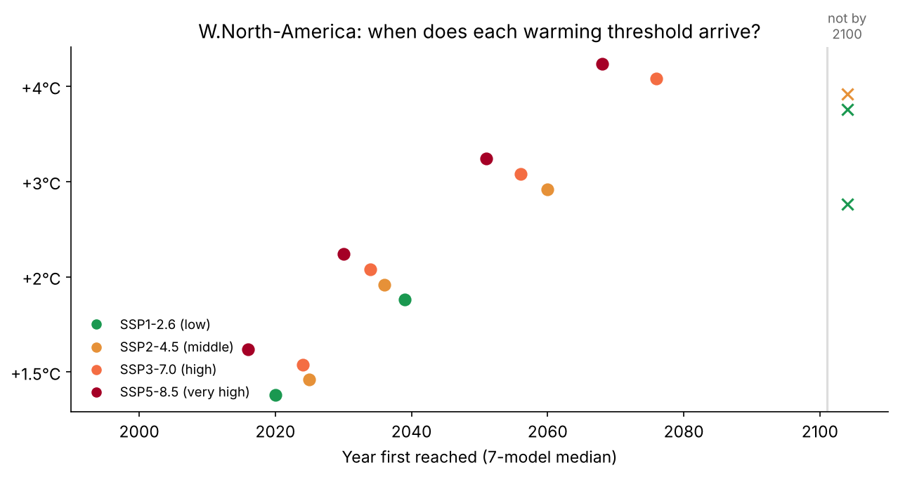

How much hotter will your part of the world get, and how much of that is still up to us?
Chaylen Nguyen-Tran, Jeffrey Kang, Peter Little, Jayleen Shang
Dataset
We are using CMIP6 (Coupled Model Intercomparison Project, Phase 6), one of the Project 3
datasets. It contains global climate model simulations produced by research centers around the world under the
World Climate Research Programme, including temperature, precipitation, and greenhouse gas projections across
multiple climate scenarios.
Converted temperature from Kelvin to °C and averaged it by year.
Averaged the grid cells in each region, weighted by latitude.
Measured warming compared to each model's 1850-1900 average.
Took the median of the 7 models, plus the min and max as the range.
Smoothed with a 10-year rolling average and saved everything as one CSV for D3.
What we intend to do
We want to make an interactive web page that helps people understand how much warmer the world could get by
2100, and how much that depends on the choices we make today. Climate change can feel big and far away, so we
want to show it in a way that feels more personal and easier to follow.
The page will tell a story as you scroll. First, it shows that the world has already warmed and that every
region shares the same past. Then it shows how the future splits into four different paths depending on how
much we keep emitting. In some regions, the gap between the best and worst paths is almost 6°C. By the end,
readers should see that our choices decide when, or even if, their region reaches important warming levels
like +2°C.
At the start, readers pick their own region, and the charts throughout the page update to show that region.
We plan to include a map with a year slider, buttons to switch between the four scenarios, a slider to see when
a region crosses a certain amount of warming, and tooltips that show more detail when you hover.
Static visualizations
All six use our processed CMIP6 data (7-model median, warming vs 1850-1900). Each maps to a step in the story.
Code: static_figures.py.
1. Warming stripes: one past, four futures
Each stripe is one year in Western North America, colored by warming, and the rows split by scenario after 2015.
2. The fork after 2015
Land regions have already warmed about 1.2°C, and by 2100 the paths range from about 2°C to 6°C.
3. Same scenarios, different regions
Under the same scenarios, Arctic and northern regions warm far more than the tropics.
4. When do thresholds arrive?
In Western North America, +3°C never arrives by 2100 under SSP1-2.6, but +4°C arrives in the 2060s under SSP5-8.5.

5. The cost of the path
Taking the very high path instead of the low path adds about 1.8°C to 6°C of late-century warming, depending on the region.
6. How fast it is warming
Warming speeds up from about 0.16°C per decade historically to 0.23 to 0.49°C per decade by 2060, depending on the path.